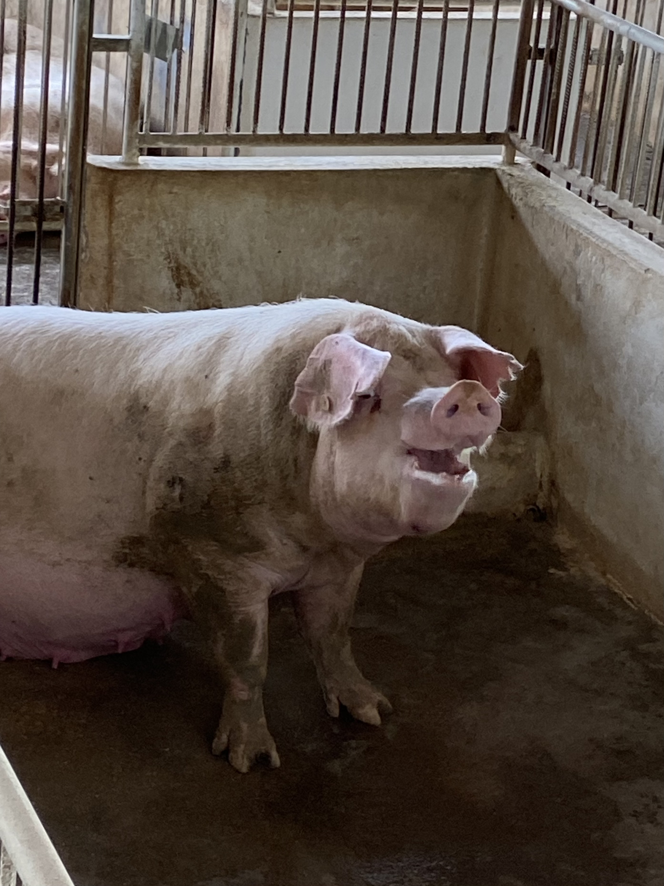
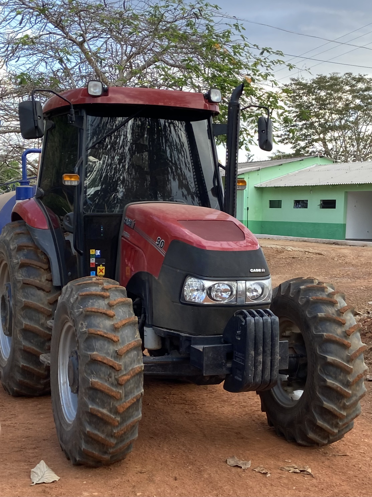
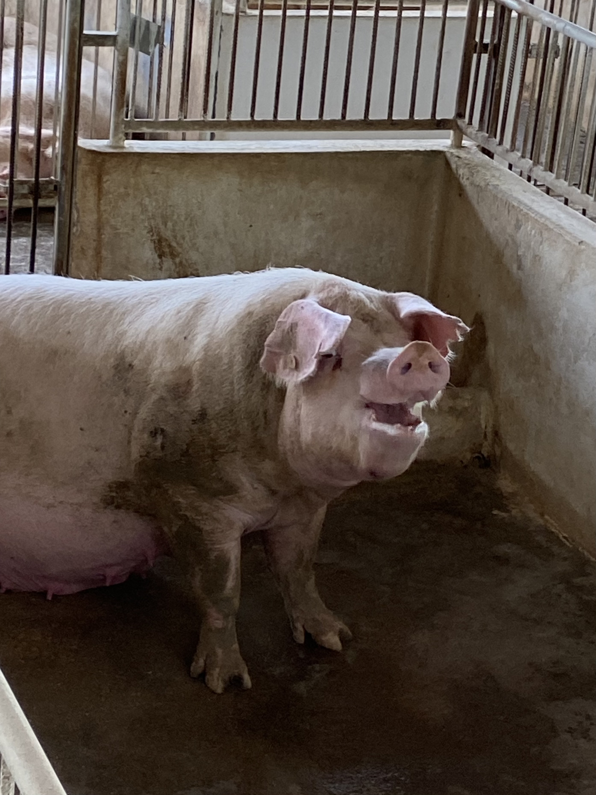
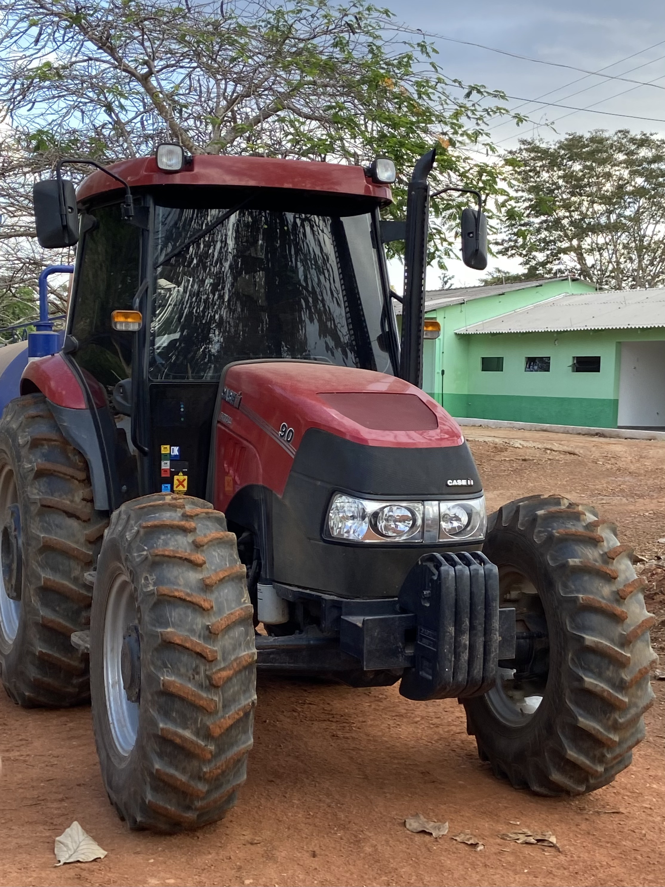
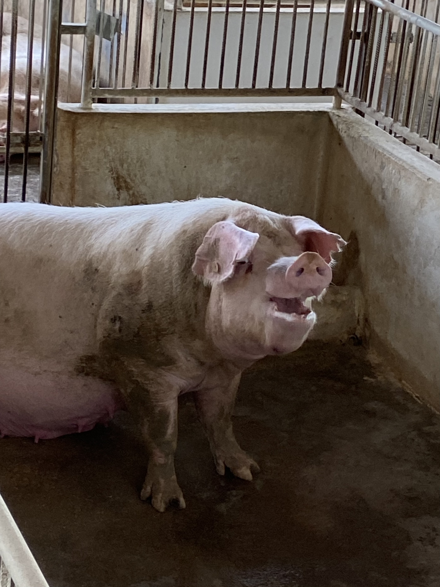
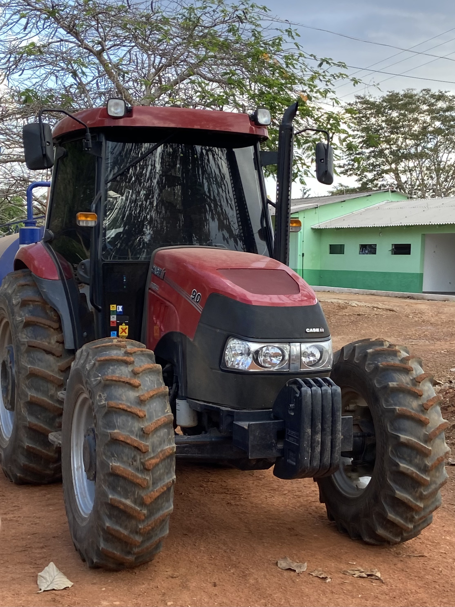

Campus Colorado do Oeste
No dia 9 de agosto, os alunos do curso de Informática do IFRO Campus Vilhena tiveram a oportunidade de realizar uma visita ao IFRO Campus Colorado do Oeste. A visita teve como objetivo proporcionar uma interação entre os cursos de Informática e o ambiente voltado para a agropecuária, explorando o uso da tecnologia nesse contexto. Ao chegarmos ao campus, fomos recebidos e introduzidos à dinâmica que seria desenvolvida ao longo do dia. Uma das atividades centrais da visita foi a participação em uma oficina de fotografia e conhecer sobre o projeto Câmera Escura. Esta atividade tinha o intuito de relacionar a tecnologia com a temática da visita. Durante a oficina, exploramos as possibilidades da fotografia como meio de expressão e comunicação, além de entender como os conceitos do que é a foto evoluíram ao longo do tempo. Durante as discussões, foram ressaltados os desafios enfrentados na busca por mídias de qualidade na internet, especialmente relacionados ao consumo de conteúdo. Como resposta a essa problemática, aprendemos sobre a criação de um canal de vídeos com conteúdo relevante para a comunidade. Esses vídeos abordavam temas diversos e tinham potencial para auxiliar a comunidade na compreensão de assuntos específicos. Um tópico relevante discutido durante a visita foi a importância da tecnologia em projetos. Ficou evidente que a tecnologia não apenas facilita a implementação de projetos, mas também permite a conexão entre diferentes formas de conhecimento. Nesse sentido, foram apresentados projetos que envolviam a gravação de vídeos educativos sobre assuntos de interesse da comunidade local.
Ficou claro que a qualidade do conteúdo apresentado é fundamental para que ele seja efetivo. Um bom conteúdo deve ser de fácil entendimento e contar com uma parte audiovisual bem elaborada. Observamos a evolução dos vídeos para formatos como podcasts, o que demonstra a busca por meios mais acessíveis e flexíveis de transmitir conhecimento. Durante a visita, também conhecemos o surgimento do "IFRO Mobile". Esse sistema foi inicialmente desenvolvido no Campus Colorado do Oeste para solucionar questões relacionadas à alteração de horários. Com o tempo, ele se tornou a plataforma principal de comunicação entre os estudantes e servidores de todos os institutos federais, demonstrando como a tecnologia pode ser aplicada para resolver problemas reais e otimizar processos internos. Além disso, tivemos a oportunidade de conhecer os setores animais e de produção agrícola do campus. Essa imersão nos permitiu entender melhor a relação entre a tecnologia e a agropecuária, identificando oportunidades para a aplicação de soluções tecnológicas nesse contexto específico. Em resumo, a visita ao IFRO Campus Colorado do Oeste foi enriquecedora e proporcionou uma visão clara de como a tecnologia pode ser integrada de maneira eficaz em contextos distintos. As atividades e discussões promoveram uma compreensão mais profunda das possibilidades da tecnologia e como ela pode ser utilizada para promover o conhecimento e a melhoria da comunidade.

